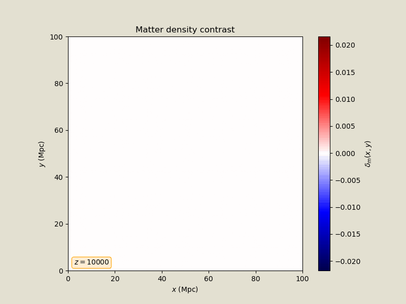

Welcome to my research page! Here you can find information about my research interests and projects.
Cosmology is a major field of research that aims to describe the properties of the Universe at its largest scales. Using General Relativity, Cosmology can describe, for instance, the expansion of the Universe, the distribution of matter across the Universe (the so-called large-scale structure), and the evolution of primordial particles created during the Big Bang. Observational Cosmology is the field of research that aims to understand the underlying cosmological model through observations of different kinds. Some of the most important observations in currently include distances and redshifts to standard candles (such as type Ia supernovae), galaxy surveys, and Cosmic Microwave Background (CMB) high-resolution measurements.
Decades of observations have led to the establishment of the \( \Lambda \)CDM model as the current paradigm for modern Cosmology. The model assumes that: gravity is governed by General Relativity; the Universe is made of the particles comprising the Standard Model of Particle Physics; additionally, there exists a cold dark matter (CDM) component that behaves as pressureless matter; there also exists a cosmological constant \( \Lambda \) in the Einstein equations; finally, right after the Big Bang, the Universe had an early phase of accelerated expansion called inflation. This model has several free parameters: the current expansion rate of the Universe, \( H_0 \); the current relative amount of CDM and baryonic matter in the Universe, \( \Omega_m \) and \( \Omega_b \); two parameters describing the power spectrum of initial perturbations, \( A_s \) and \( n_s \). Additionally, to predict anisotropies of the Cosmic Microwave Background, one needs the optical depth of reionization \( \tau \). The \( \Lambda \)CDM model represents the minimal set of assumptions that can provide accurate descriptions for all cosmological probes.

Evolution of the matter density contrast across several redshifts [source].
Throughout the decades, the success of cosmological observations incentivized ambitious projects aiming to put the \( \Lambda \)CDM model to test. The increase in precision has started to defy the current paradigm when disagreements between different observables started to appear. Two such disagreements attracted attention from the cosmological community: the Hubble and the \(S_8 \) tensions.
The Hubble tension is the discrepancy between measurements of the Hubble constant \(H_0\) from the Cosmic Microwave Background (CMB) and from local distance ladder measurements. Using state-of-the-art datasets, the statistical significance of this tension reaches the \( 7 \sigma \) level.
The \( S_8 \) tension refers to the discrepancy between the value of the parameter \( S_8 = \sigma_8 \sqrt{\Omega_m/0.3} \) measured from the Cosmic Microwave Background (CMB) and the value obtained from galaxy surveys. Its statistical significance varies depending on the datasets considered and the systematic error treatment employed in the analysis, fluctuating from below \( 1\sigma \) up to \( 3\sigma\).
Besides cosmological tensions, recent geometric datasets suggest a deviation from the standard cosmological model of a cosmological constant (\( \Lambda \)CDM). This deviation can be characterized by a dynamical dark energy equation of state \( w \) that evolves with redshift according to the \( w(a) = w_0 + w_a(1-a) \). In this parametrization, the cosmological constant can be recovered by setting \( w_0 = -1 \) and \( w_a = 0\); however, current data prefers values of \( w_0 \approx -0.8 \) and \( w_a \approx -0.8 \). The best-fit \( w_0w_a \) model can fit the data better than \( \Lambda \)CDM with significances ranging from \( 3.2 - 3.6\sigma \).
This topic has been the theme of my PhD and is my main focus of research. Observational problems present in the \( \Lambda \)CDM model led the community to challenge its assumptions with additional physics assumptions. Using Bayesian data analysis techniques, we can place constraints in parameters describing new physics, make quantitative statements about which model the current datasets prefer. Furthermore, we can assess the effect of new physics on the current-standing cosmological tensions. I have experience on several classes of candidate models: dynamical dark energy (fluids and scalar fields), early dark energy, interactions between dark matter and dark energy, phenomenological modifications to the growth of structure, modified gravity, among others.
Galaxy surveys have become leading cosmological probes over the past years, with a constraining power comparable to CMB measurements. There are various ways to extract model information from a galaxy catalog. From the same data, there are multiple choices of summary statistic, each one subject to different systematic errors. To obtain unbiased constraints, such systematic errors need to be well-understood and properly accounted-for in the analysis. The 3x2pt analysis uses the 2-point angular correlation functions of galaxies' shapes (cosmic shear), positions (galaxy clustering), and their cross-correlations (galaxy-galaxy lensing). Several techniques are able to extract further information beyond the 2-point correlation functions. Furthermore, artificial intelligence can be employed to accelerate cosmological inference, enabling efficient analysis of the huge amount of data that will be generated over the next decades.
N-body simulations are vital computational techniques to describe the nonlinear clustering of matter at small scales probed by galaxy surveys. At these scales, baryonic feedback effects also take place, necessitating hydrodynamical simulations or other prescription to include those effects. Those simulations are expensive: each one costs hundreds of thousands or even millions of CPU-hours. Approximation techniques such as the COLA method can reduce the computational costs while still maintaining accuracy at small scales.
Type Ia supernovae luminosity distances are widely used observations to constrain the late-time expansion of the Universe, with several state-of-the-art catalogues nowadays and much more data incoming. The residuals of these distances can be attributed to peculiar velocities and be modelled using the matter velocity field, another prediction from cosmological models. Supernovae peculiar velocities can provide additional information about the growth of the large-scale structure, complementing information from the CMB.